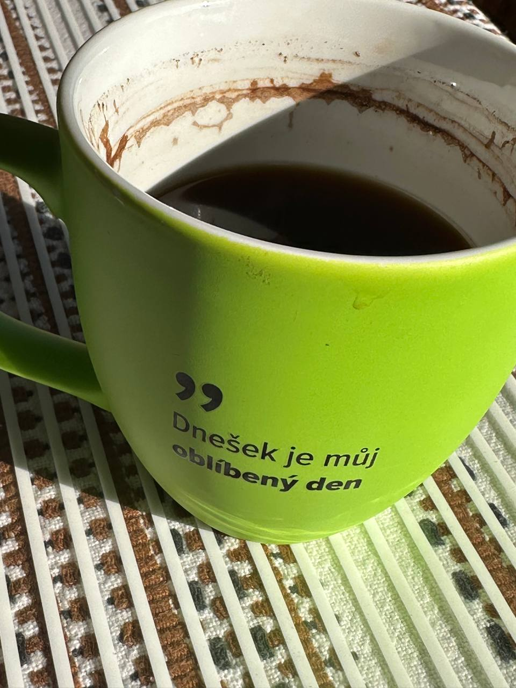

Coffee-Driven Development
After years of practicing test-driven, behaviour-driven and, in darker times, schedule-driven development, I have distilled everything I learned into a single unified methodology: Coffee-Driven Development, or CDD. In CDD the state of the system is a direct function of the engineer’s caffeine blood level, and every architectural decision can be derived from a simple lookup table.

The methodology’s mission statement, as printed on the official ceremonial vessel: Dnešek je můj oblíbený den — “today is my favorite day”. Every day is, provided the lookup table is honoured.
The four phases
- Espresso (08:00) — refactoring. Nothing says “let’s move this function to its own package” like a fresh double shot.
- Latte (10:30) — feature work. The milk slows absorption just enough that the code compiles on the first try.
- Filter (13:00) — code review. Mellow, forgiving, willing to leave a “nit (non-blocking)” comment and mean it.
- Decaf (17:00) — deployment. You want steady hands and no ambition anywhere near production.
A worked example
The methodology embeds naturally into any language. Here is the reference implementation of the decision engine in Go, which I encourage you to vendor into your own codebase without further thought:
type Phase int
const (
Espresso Phase = iota
Latte
Filter
Decaf
)
// Decide returns the appropriate activity for the current
// caffeine phase. It never returns an error; that is the point.
func Decide(p Phase) string {
switch p {
case Espresso:
return "refactor mercilessly"
case Latte:
return "ship the feature"
case Filter:
return "review kindly"
default:
return "deploy and walk away"
}
}Adoption has been excellent: zero dependencies, no configuration files, and the whole framework fits in the head. Benchmark results against Scrum are pending, mostly because the benchmark harness fell asleep after lunch.
Limitations and future work
CDD is not without critics. Tea drinkers report the phases arrive in the wrong order, and one reviewer noted that “Decaf” is functionally identical to being on holiday. Future work includes a distributed variant (multiple engineers, one pot) and a rolling upgrade path for teams currently on water.